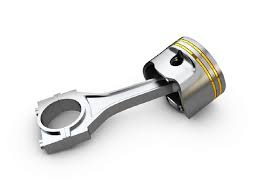

Piston adalah komponen mesin yang membentuk ruang bakar bersama – sama dengan silinder blok dan silinder head. Piston jugalah yang melakukan gerakan naik turun untuk melakukan siklus kerja mesin, serta piston harus mampu meneruskan tenaga hasil pembakaran ke crankshaft. Jadi dapat kita lihat bahwa piston memiliki fungsi yang sangat penting dalam melakukan siklus kerja mesin dan dalam menghasilkan tenaga pembakaran.